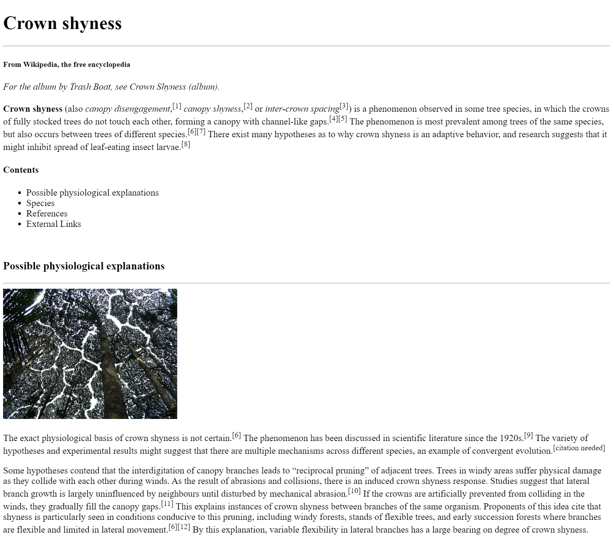

*Note: It is imperative that all of your coursework throughout your time here at F.I.R.S.T. be saved on an external hard/flash drive from now through graduation. You will be referencing your work again in the future to be added to your portfolio, so we expect you not to delete any of your work, including working files.*

OBJECTIVES:
-
- Create a simplified version of the Crown Shyness Wikipedia page (based on the screenshot above)
- Practice using the HTML Elements you've learned so far
NEW CONCEPTS WE'LL BE USING:
HOW TO COMPLETE:
Wiki pages usually have a relatively simple structure, so they're a great option for beginning programmers to flex their HTML muscles. Our goal is to recreate the screenshot above using the HTML elements you've learned about. Let's get started!
-
- Navigate to the "Crown shyness" Wikipedia page in the Chrome browser
- In Visual Studio Code, duplicate your code-skeleton project folder inside of your repository folder, and rename the duplicate "wiki-page-1"
- Follow your instructor in creating tags for our content, and copy/paste the content found on the Wikipedia page.
- By the time you complete the page, you should have used:
- Heading elements (like <h1>, <h3>, etc.)
- Paragraph elements (<p>)
- Unordered List elements (<ul>)
- List Item elements (<li>)
- Horizontal Rule elements (<hr>)
- Image elements (<img>)
- including src, alt, and probably width and/or height attributes
- Text styling elements (<b> and <i> and <sup>)
When completed, your preview window in Visual Studio Code should resemble the screenshot at the top of the assignment (though it could look different if your window width is wider or smaller).
CHALLENGE
If you find yourself finishing early and wondering what to do next, notice that we didn't add all the sections from the Wikipedia page.
Venture forth into the unknown, and try your best to add the remaining section content on Crown Shyness!
HOW TO SUBMIT:

-
- SAVE ALL OF YOUR WORK BEFORE PROCEEDING (inside Visual Studio Code)
- Open your Github Desktop app and commit and push any changes you made in the project folder
- Go to github.com in the Google Chrome browser and ensure the changes to your project folder were "pushed" up to your github.com repository
- Open the Github Pages site (Settings -> Pages -> Visit site)
- or alternatively, go to the Environments/Deployments section of your repository page, click "github-pages", and then click the most recent deployment
- Add your project folder name at the end of your URL
- Open the link to your new webpage for the project.
- Confirm it actually works before you submit it!!!
- Copy the URL in the address bar and submit it to receive credit for this assignment.
- Example URL: http://username.github.io/code-skeleton/
- This example assumes you followed the initial setup instructions correctly; if you deviated or made any mistakes, your URL may look a little different